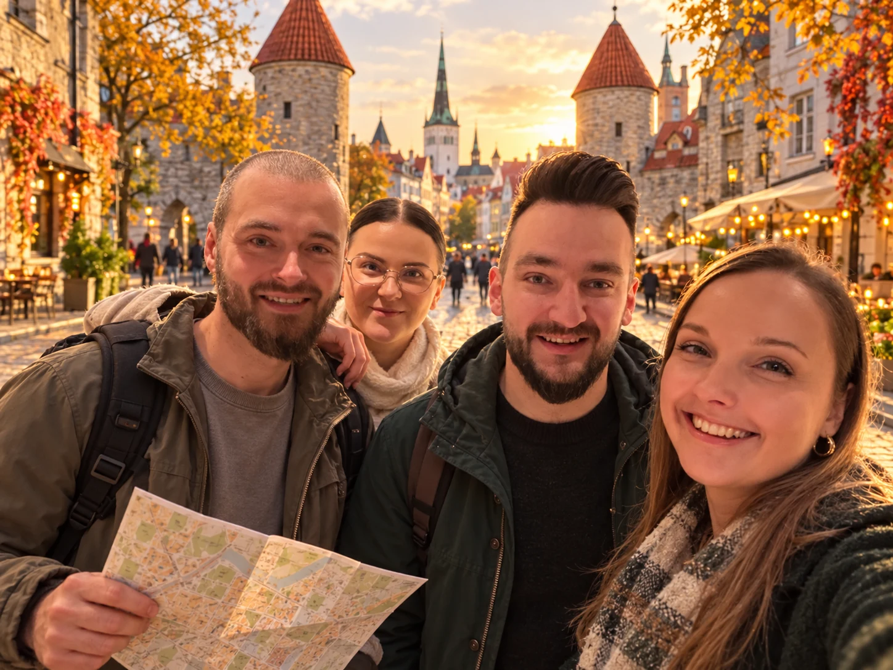

Nākamā pietura — Tallina.
Lai ceļš kļūst par piedzīvojumu.
Daži uzdevumi. Daudz smieklu. Neaizmirstams ceļojums.
Izvēlies uzdevumu un radi kopīgas atmiņas.
59°26′N 24°45′EESTONIA

Pats labākais?
Viss, ko piedzīvojam kopā.LET'S
GO!
Viss, ko piedzīvojam kopā.LET'S
GO!
✳
Ar katru kartīti — tuvāk atmiņām.
Kopīgās atmiņas sākas ar pirmo kartīti.
0 / 30 izpildīts
MAZĀK EKRĀNA. VAIRĀK PIEDZĪVOJUMU.
Tavs piedzīvojums sākas šeit.
Šeit vēl nav kartīšu. Nākamais piedzīvojums ir viena uzdevuma attālumā.